Architecture réalisée
Les deux TP ont été réalisés sur une seule maquette qui reprend le schéma de l'énoncé : des capteurs simulés sur le PC publient vers un broker MQTT installé sur le Raspberry Pi (nœud edge). Le Pi filtre et réduit les données, puis les transmet à un broker MQTT dans le cloud. Le rôle de l'IoT Cloud est joué par une instance AWS EC2 qui héberge aussi un tableau de bord web accessible par son adresse IP publique.
Bleu : données brutes des capteurs (réseau local). Orange : données réduites par l'edge (Internet). Le PC voit les deux sauts sur l'interface VMware VMnet8, ce qui permet de mesurer le gain de bande passante avec un seul Wireshark, comme le demande le TP2.
| Élément | Rôle | Adresse | Logiciels |
|---|---|---|---|
| PC hôte | Capteurs simulés, broker local (TP1), analyse | 192.168.174.1 | Python 3.12, paho-mqtt 2.1, PyQt6, Mosquitto 2.0.22, Wireshark 4.6.9 |
| Raspberry Pi (VMware) | Nœud edge : broker, filtrage, dashboard local | 192.168.174.133 | Raspberry Pi Desktop (Debian 11 i386), Mosquitto 2.0.11, paho 1.5.1, Node.js 20, Node-RED 4 |
| EC2 (eu-north-1) | IoT Cloud : broker + dashboard web | 13.60.75.46 | Ubuntu 26.04, Mosquitto 2.0.22, Node.js 22, Next.js 15, nginx 1.28 |
Communication MQTT et Raspberry Pi
Raspberry Pi comme nœud edge et image virtuelle §I–III
Le Raspberry Pi joue le rôle de passerelle intelligente entre les objets et le cloud. Les capteurs (DHT, MQ135) publient localement en MQTT vers le broker Mosquitto du Pi. Le Pi agrège, filtre, détecte des événements et ne transmet au cloud que les informations utiles. On combine ainsi la faible latence et le fonctionnement local de l'edge avec le stockage et l'analyse à long terme du cloud.
Faute de carte physique, l'image 2022-07-01-raspios-bullseye-i386 (Raspberry Pi Desktop pour PC) a été installée dans une machine virtuelle VMware Workstation : 4 Go de RAM, 2 vCPU, disque de 20 Go et réseau NAT (VMnet8). La VM se comporte comme un Pi réel pour tout le logiciel (Mosquitto, Python, Node-RED). Seuls les GPIO, SPI, I2C et la caméra manquent, ce qui n'a aucun effet ici puisque les capteurs sont simulés.
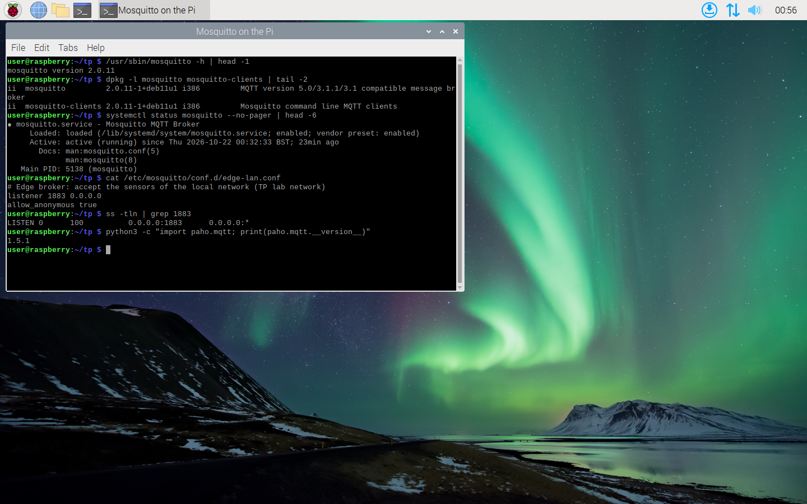
apt install mosquitto mosquitto-clients), le service est actif et écoute sur 0.0.0.0:1883 grâce au fichier /etc/mosquitto/conf.d/edge-lan.conf. paho-mqtt 1.5.1 est disponible pour Python.Mosquitto et Python sur le Raspberry Pi §III.5–7 · §V.1–3
Mosquitto 2 n'écoute par défaut que sur localhost. Pour que les capteurs du réseau puissent publier, on ajoute un listener sur toutes les interfaces :
# /etc/mosquitto/conf.d/edge-lan.conf
listener 1883 0.0.0.0
allow_anonymous trueTest de l'énoncé : un abonné sur iot/temp dans un terminal, un publieur dans un second. Les trois messages publiés, dont un JSON, arrivent immédiatement chez l'abonné.
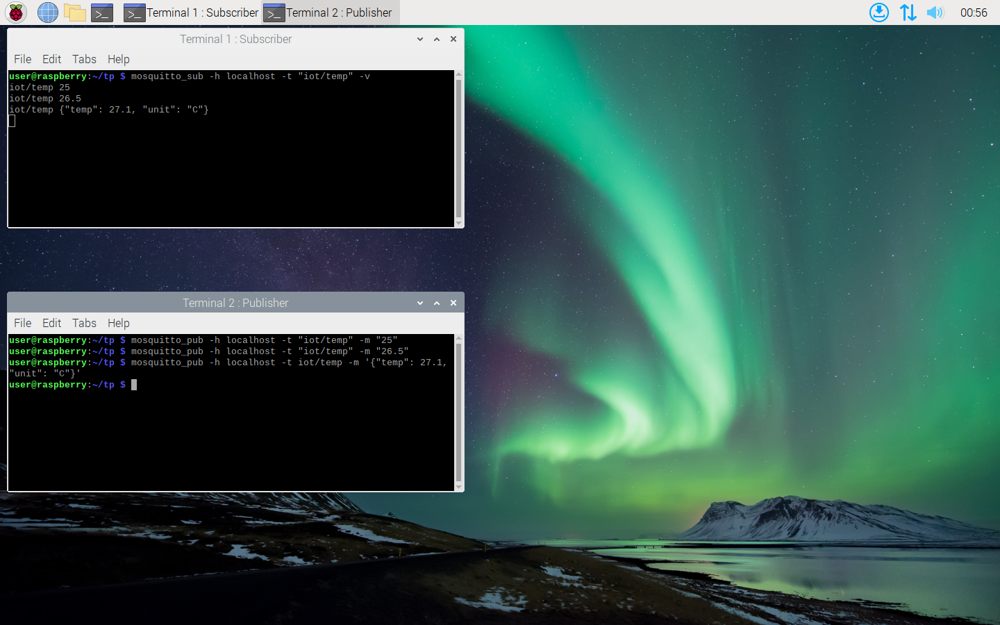
mosquitto_sub -h localhost -t "iot/temp" -v. Terminal 2 : mosquitto_pub de 25, 26.5 et d'un objet JSON. Le résultat attendu (« 25 ») est obtenu.Même chose en Python avec paho-mqtt : l'exemple publish.single() de l'énoncé, puis un client publieur (on_publish, ampoule house/bulb1 et températures) et un client abonné (on_connect / on_message, loop_forever()).
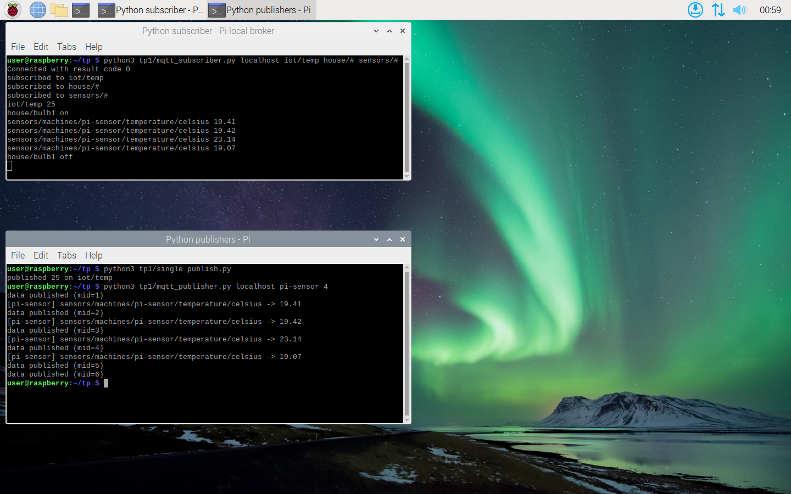
tp1/mqtt_subscriber.py reçoit le message de single_publish.py puis les publications de mqtt_publisher.py (callback on_publish : « data published (mid=n) »).# tp1/mqtt_subscriber.py (extrait) — compatible paho 1.x (Pi) et 2.x (PC)
def on_connect(client, userdata, flags, rc, properties=None):
print("Connected with result code " + str(rc))
for t in topics:
client.subscribe(t)
def on_message(client, userdata, msg):
print(msg.topic + " " + msg.payload.decode())
client = mqtt.Client(mqtt.CallbackAPIVersion.VERSION2) if hasattr(mqtt, "CallbackAPIVersion") else mqtt.Client()
client.on_connect, client.on_message = on_connect, on_message
client.connect(broker, 1883, 60)
client.loop_forever()MQTT sous Windows §IV
Le broker Mosquitto 2.0.22 a été installé sur le PC et lancé en mode verbeux avec un listener sur toutes les interfaces (fichier tp1/mosquitto-windows.conf). La commande de l'énoncé confirme l'écoute sur le port 1883.
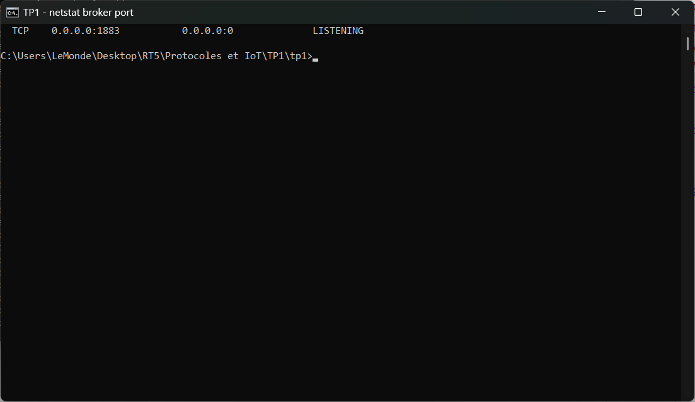
netstat -an | findstr 1883 : TCP 0.0.0.0:1883 LISTENING.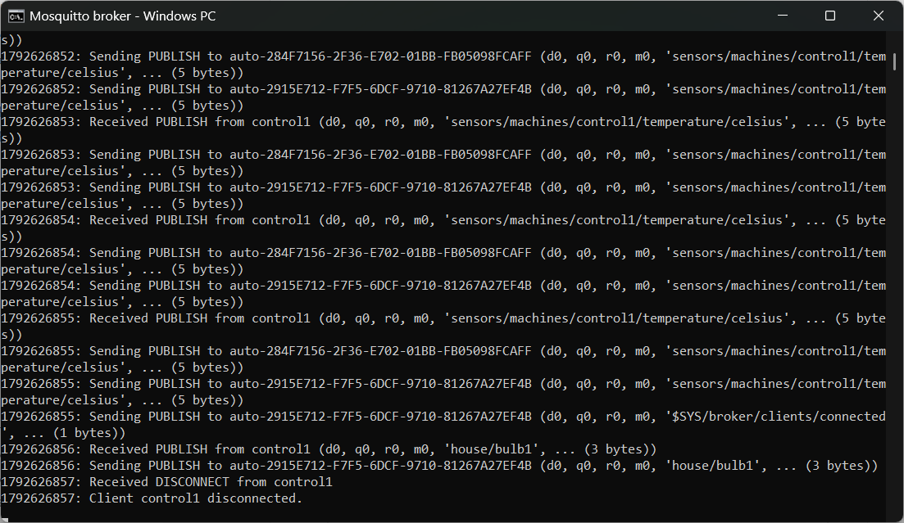
mosquitto -v) : réception des PUBLISH du client control1 et relais vers les deux abonnés.Publication et abonnement en ligne de commande, avec l'option -d qui affiche les paquets MQTT échangés (CONNECT, CONNACK, SUBSCRIBE, SUBACK, PUBLISH) :
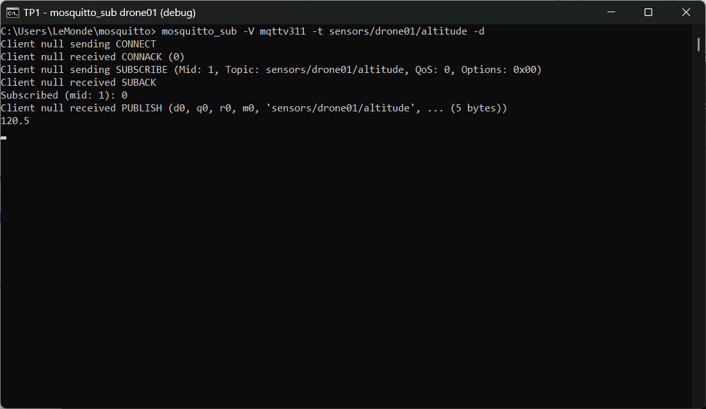
mosquitto_sub -V mqttv311 -t sensors/drone01/altitude -d : séquence CONNECT → CONNACK(0) → SUBSCRIBE → SUBACK, puis réception de 120.5.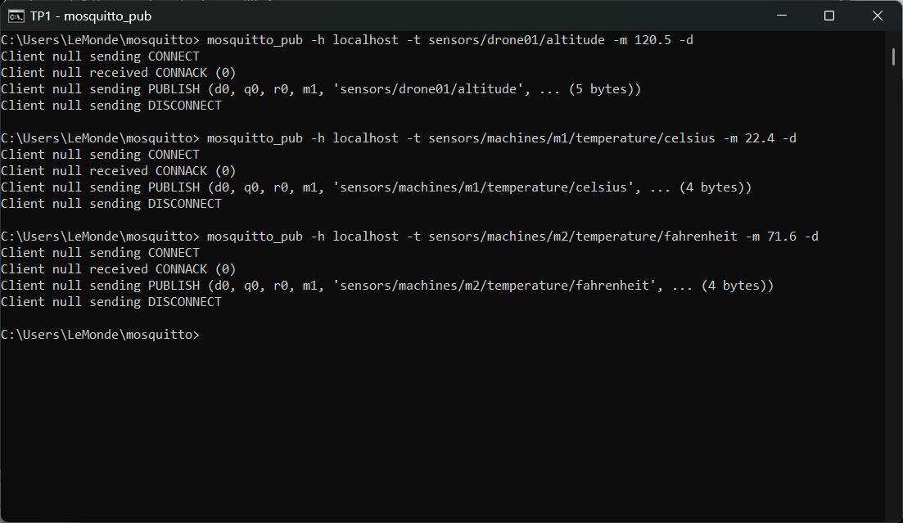
mosquitto_pub -h localhost -t topicName -m "message" -d sur trois topics.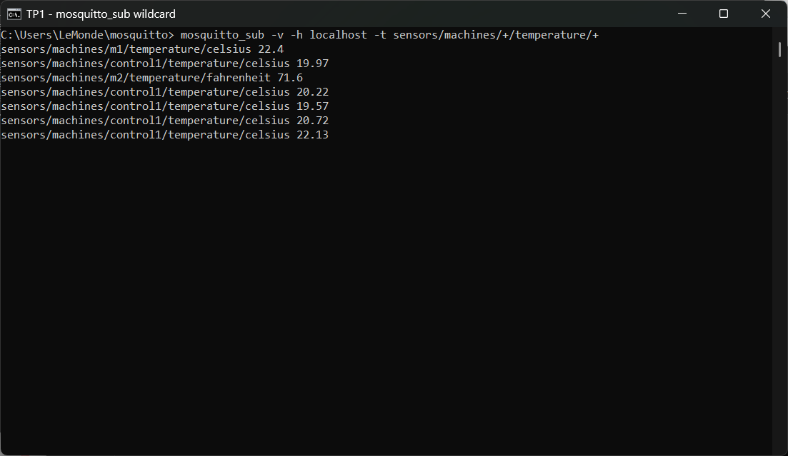
sensors/machines/+/temperature/+ reçoit m1/temperature/celsius, m2/temperature/fahrenheit et control1/temperature/celsius, mais pas sensors/drone01/altitude.Application Python (paho) qui publie et reçoit via le broker du PC :
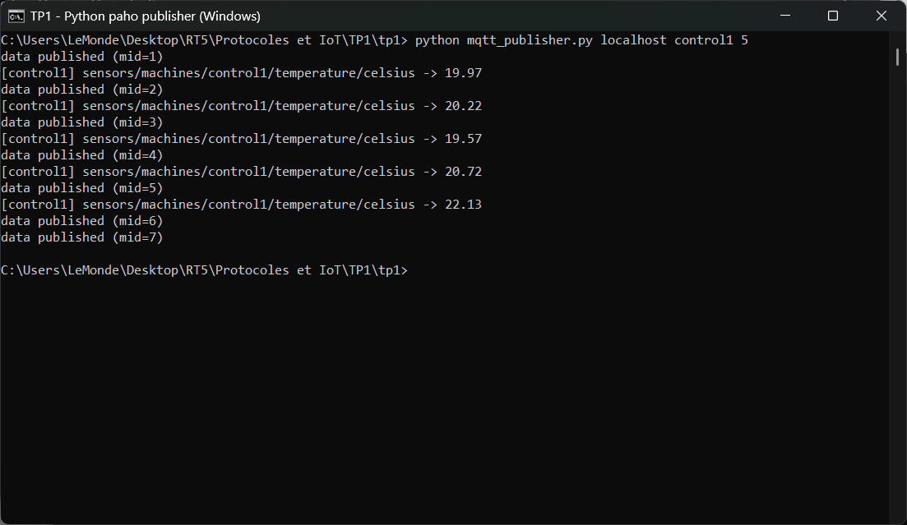
mqtt_publisher.py localhost control1 5.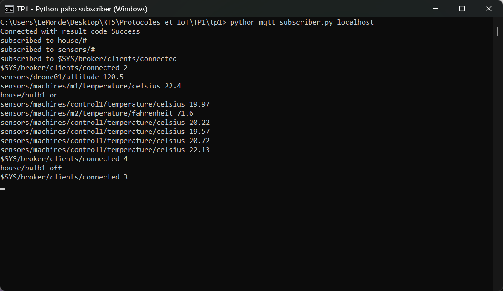
house/#, sensors/# et $SYS/broker/clients/connected. Le topic système montre l'évolution du nombre de clients connectés (2 → 4 → 3).Analyse Wireshark des paquets MQTT
Capture sur l'interface loopback (\Device\NPF_Loopback, filtre tcp port 1883) pendant les échanges ci-dessus, affichée avec le filtre mqtt.
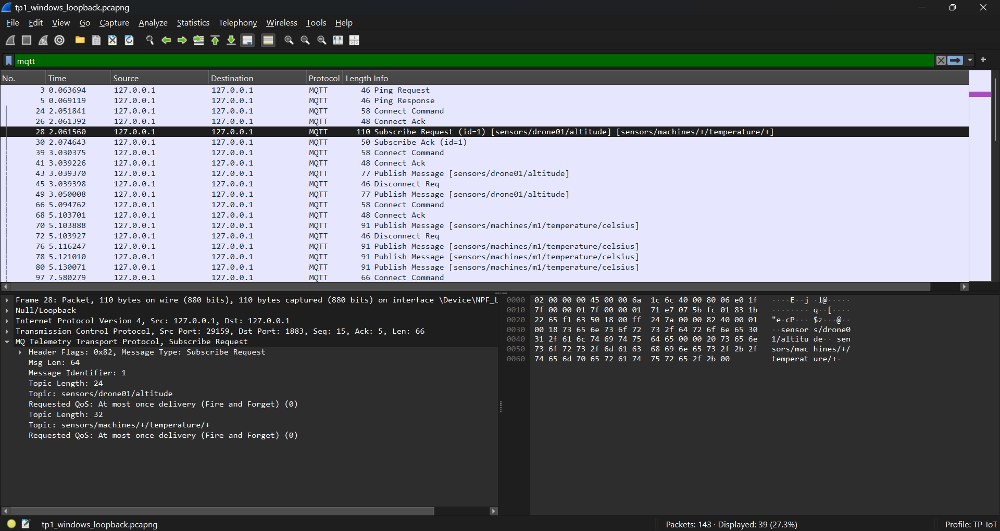
0x82 (type 8 = SUBSCRIBE, bits réservés 0010), identifiant de message 1, deux filtres de topic avec leur QoS demandée (0).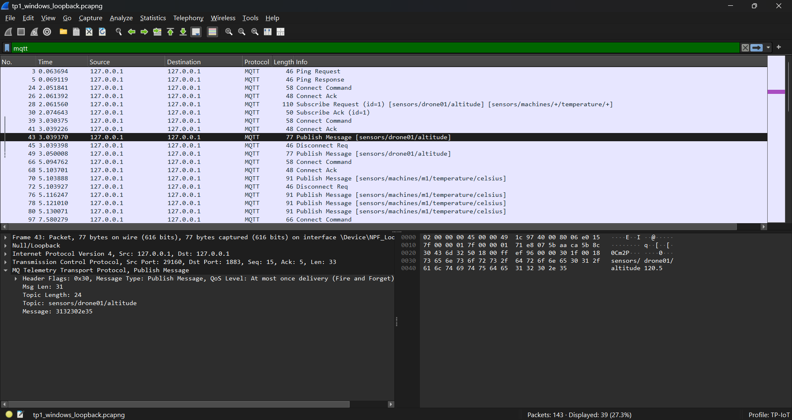
0x30 (type 3 = PUBLISH, QoS 0, pas de DUP ni de RETAIN), longueur du topic, topic sensors/drone01/altitude puis la charge utile 120.5. En QoS 0 il n'y a ni identifiant ni acquittement : c'est le mode « fire and forget ».On observe la légèreté du protocole : un PUBLISH tient en 2 octets d'en-tête fixe, plus le topic et la charge utile. Le CONNACK fait 4 octets et un PINGREQ 2 octets. Sur ces petits messages, l'essentiel de la trame vient des en-têtes TCP/IP (52 à 66 octets), et c'est précisément ce que la réduction à l'edge économise au TP2.
Échanges entre le PC et le Raspberry Pi §V.2–5
PC → broker du Pi. Comme sur la figure de l'énoncé, le PC publie "Hello MQTT" vers le broker du Pi et un abonné # sur le Pi le reçoit. Le message retenu edge/config apparaît aussi : il vient de la passerelle edge décrite plus loin.
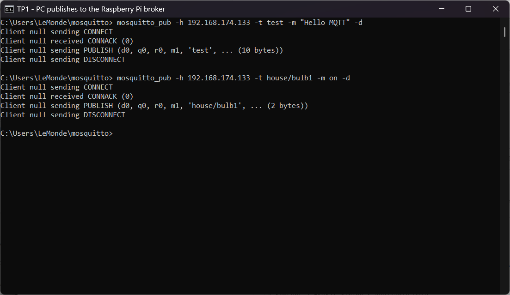
mosquitto_pub -h 192.168.174.133 -t test -m "Hello MQTT" -d depuis Windows.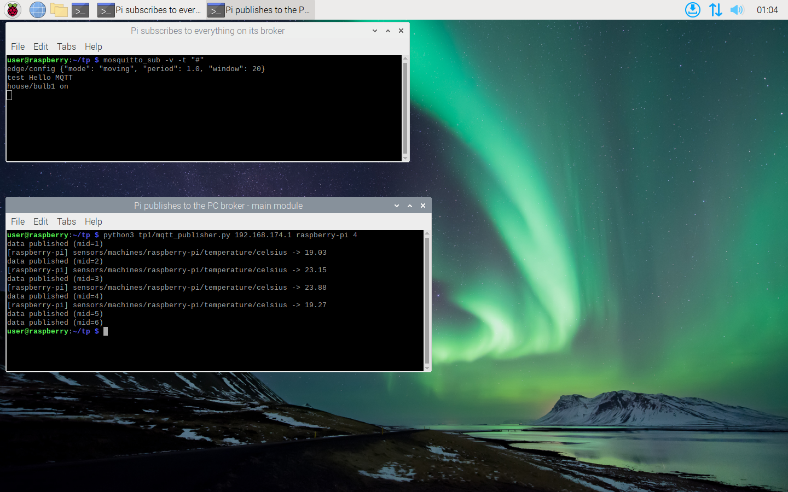
test Hello MQTT et house/bulb1 on. En bas : le Pi publie vers le broker du PC (192.168.174.1).Broker du PC comme module principal (§V.4). Le script Python du Pi publie vers le broker Windows. Le broker journalise la connexion du client raspberry-pi venant de 192.168.174.133, et un abonné Windows reçoit les données.
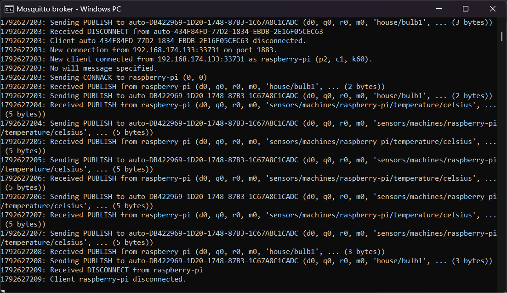
New client connected from 192.168.174.133 as raspberry-pi, puis les PUBLISH relayés.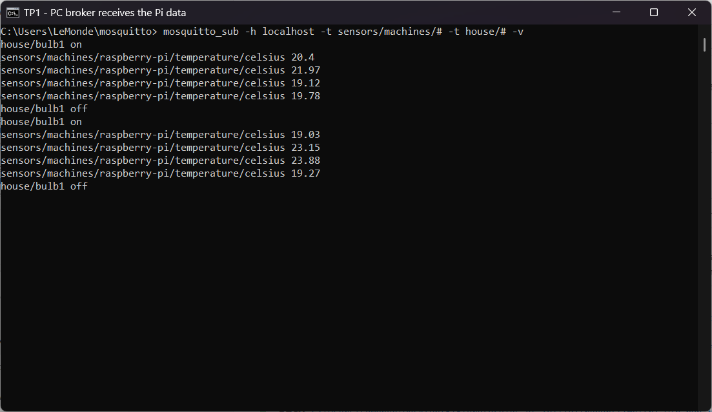
mosquitto_sub -h localhost -t sensors/machines/# -t house/# -v sur le PC.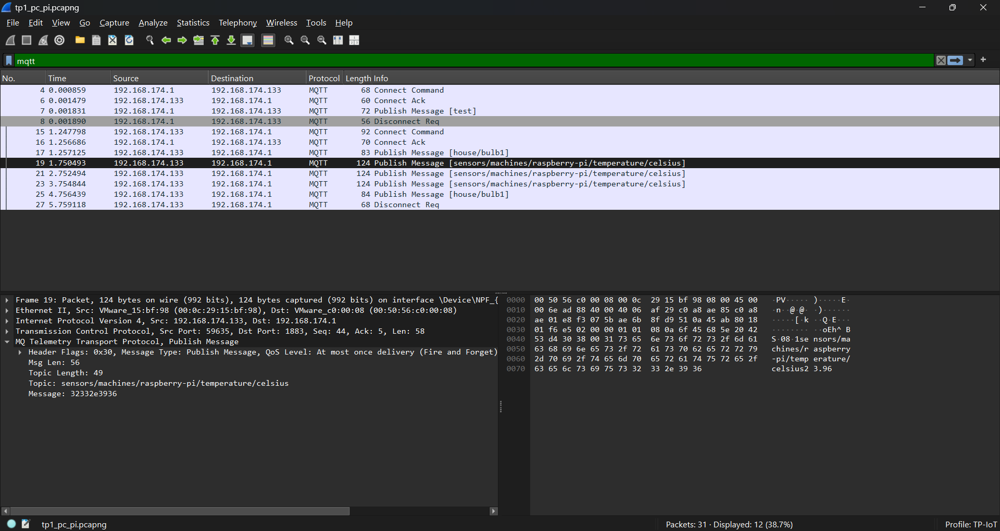
test, Disconnect), puis la session Pi → PC (Connect, quatre Publish, Disconnect). Le PUBLISH sélectionné porte le topic de 49 octets sensors/machines/raspberry-pi/temperature/celsius.§V.5, M2M entre deux Raspberry Pi : non réalisé, faute d'un second Pi. Le principe est le même que ci-dessus : un Pi héberge le broker, l'autre Pi se connecte comme client à son adresse et publie ou s'abonne. Les deux dialoguent sans passer par le cloud.
Broker IoT Cloud sur AWS EC2 §III.8
À la place d'AWS IoT Core, l'IoT Cloud est un broker Mosquitto installé sur une instance EC2 (Ubuntu 26.04, eu-north-1). Il est exposé sur Internet, donc l'accès anonyme est interdit. Deux comptes protégés par mot de passe et une ACL séparent les rôles :
# /etc/mosquitto/conf.d/cloud.conf # /etc/mosquitto/acl
listener 1883 0.0.0.0 user edge # passerelle Raspberry Pi
allow_anonymous false topic readwrite cloud/#
password_file /etc/mosquitto/passwd
acl_file /etc/mosquitto/acl user viewer # dashboards, simulateur
topic read cloud/#Le groupe de sécurité EC2 n'ouvre que les ports 22 (SSH), 80 (dashboard) et 1883 (MQTT). Les mots de passe sont générés aléatoirement et stockés hors du code (cloud/secrets.env, fichier .env.mqtt du dashboard).
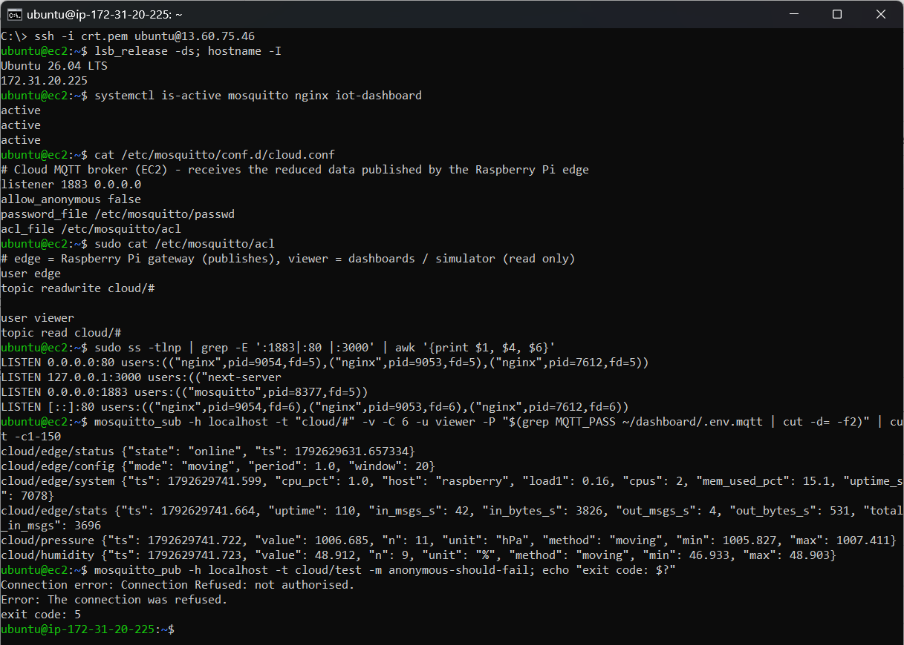
mosquitto, nginx et iot-dashboard actifs, ports en écoute, réception des messages cloud/# envoyés par le Pi. Un client anonyme est refusé (not authorised, code 5).Edge computing et filtrage de données pour l'IIoT
La maquette du TP2 est celle de la figure d'architecture : le PC génère les données d'un capteur et les publie vers le broker edge du Pi. Une application sur le Pi les réduit et publie le résultat vers le broker cloud (EC2). Wireshark sur le PC, interface VMnet8, mesure les deux débits. Toutes les captures sont faites avec le filtre de capture tcp port 1883.
Étape 1 · génération de trafic capteur et publication vers l'edge
1.1 Génération du dataset. Le code C# de bitperfect.at a été porté en Python (tp2/sensor_sim.py). Chaque valeur s'écarte de la précédente d'un pas aléatoire inférieur à σ/10. La probabilité de continuer dans la même direction diminue quand on s'éloigne de la moyenne, ce qui donne une courbe continue et réaliste autour de μ.
class Simulator:
def __init__(self, seed, mean, standard_deviation):
self._random = random.Random(seed)
self._mean, self._standard_deviation = mean, abs(standard_deviation)
self._step_size_factor = self._standard_deviation / 10
self._value = self._mean - self._random.random()
def calculate_next_value(self):
value_change = self._random.random() * self._step_size_factor
factor = (-1, 1)[self._decide_factor()]
self._value += value_change * factor
return self._value
def _decide_factor(self):
if self._value > self._mean:
distance, continue_direction, change_direction = self._value - self._mean, 1, 0
else:
distance, continue_direction, change_direction = self._mean - self._value, 0, 1
chance = (self._standard_deviation / 2) - (distance / 50)
random_value = self._random.random() * self._standard_deviation
return continue_direction if random_value < chance else change_direction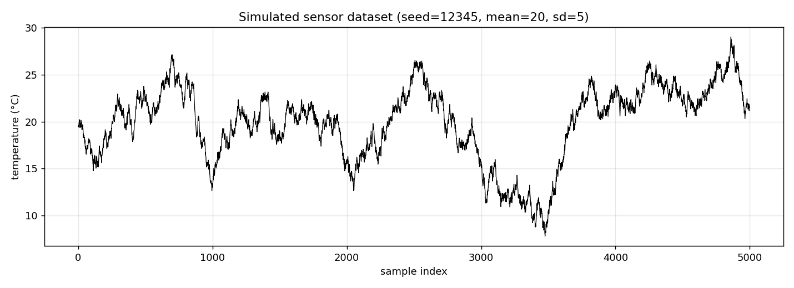
1.2 Publication périodique. step1_2_periodic_pub.py publie une valeur toutes les 100 ms (10 msg/s) sur sensors/temperature/raw, au format JSON {"seq", "ts", "value"}. La réception est vérifiée sur le Pi avec mosquitto_sub.
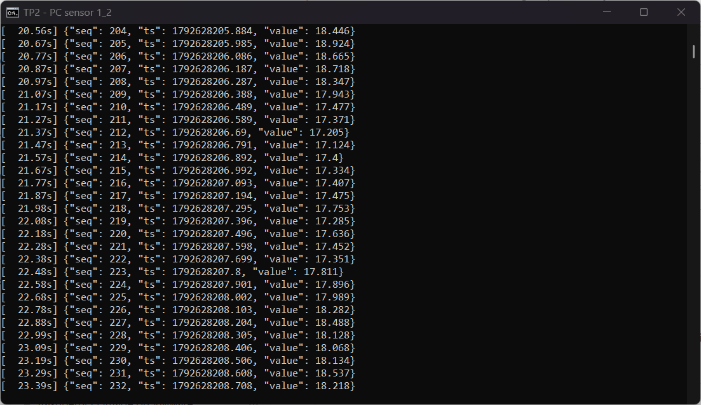
mosquitto_sub -t sensors/temperature/raw -v, numéros de séquence continus.1.3 Débit dans Wireshark. Graphe Statistics › I/O Graphs (intervalle 1 s, axe en octets, filtre mqtt.msgtype==3 && ip.dst==192.168.174.133). Le débit est un plateau quasi constant d'environ 1,27 ko/s.
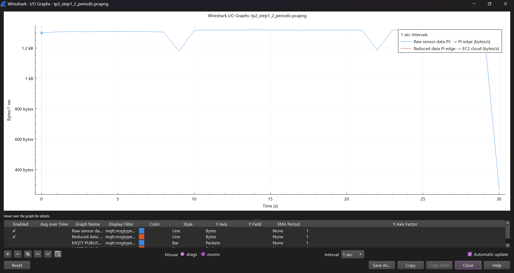
1.4 Publication poissonnienne. Les instants de publication suivent un processus de Poisson de paramètre λ = 10 msg/s. Les intervalles sont tirés selon une loi exponentielle avec le code fourni, -math.log(1.0 - n) / l, adapté pour envoyer les valeurs du dataset.
def next_time_interval(l):
n = random.random() * 1.0
inter_event_time = -math.log(1.0 - n) / l
return inter_event_time
for i, value in enumerate(dataset):
tt = next_time_interval(l)
time.sleep(tt)
client.publish("sensors/temperature/raw",
json.dumps({"seq": i, "ts": round(time.time(), 3), "value": round(value, 3)}))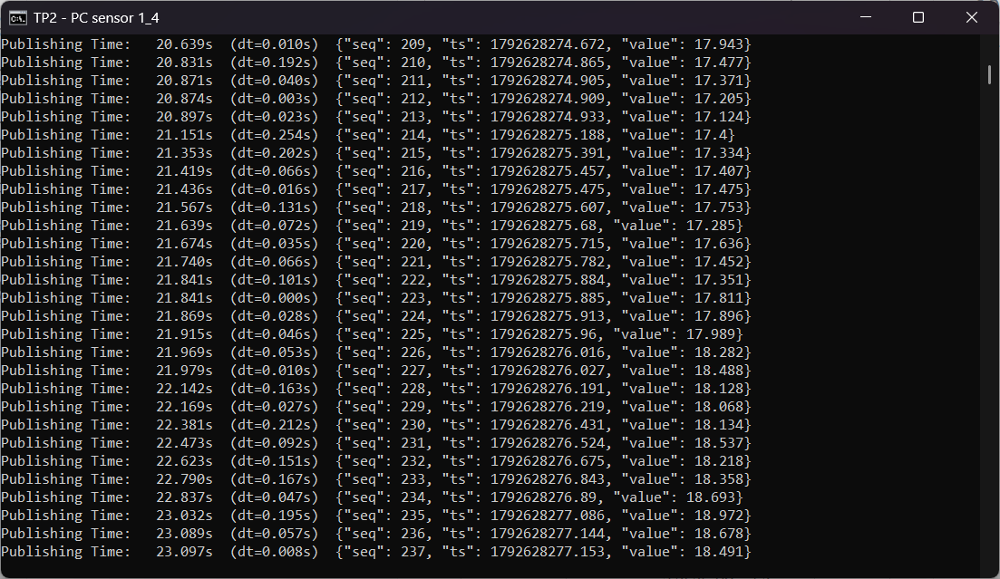
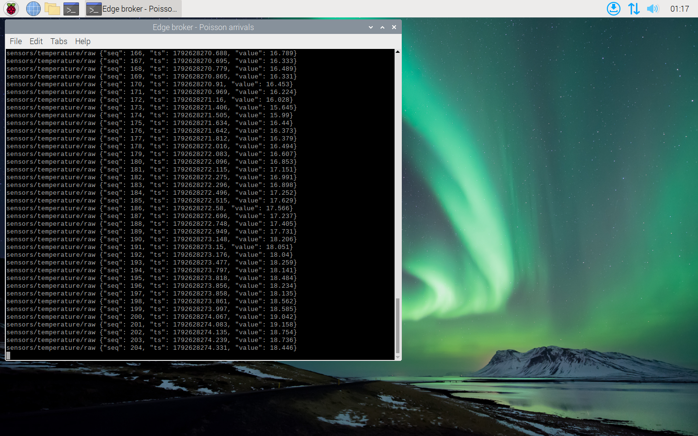
1.5 Comparaison. Pour le même nombre de messages et le même débit moyen, l'arrivée poissonnienne fait fluctuer fortement le débit instantané, ce qui est plus réaliste pour un parc de capteurs.
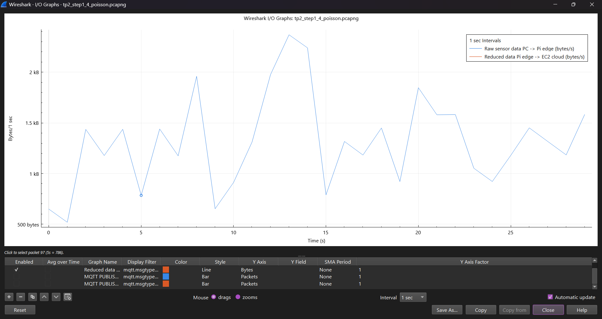
| Capture (30 s, 300 msg) | PUBLISH | Octets | msg/s moyen | Écart-type msg/s | Min–max msg/s | o/s moyen |
|---|---|---|---|---|---|---|
| Périodique (T = 100 ms) | 300 | 39 433 | 9,7 | 1,4* | 10–10 | 1 272 |
| Poisson (λ = 10) | 300 | 39 431 | 10,0 | 3,4 | 4–18 | 1 314 |
* L'écart-type du cas périodique vient uniquement de la première seconde, partiellement capturée (2 messages). Sur toutes les autres secondes, on compte exactement 10 messages.
Étape 2 · réduction par échantillonnage et publication vers le cloud
2.1 step2_edge_sampling.py tourne sur le Pi. Il s'abonne au topic brut sur le broker local, ajoute chaque valeur à une liste et, toutes les 2 s, publie la moyenne de la liste vers le broker de l'EC2 (cloud/temperature, compte edge), puis vide la liste.
def on_message(client, userdata, msg):
with lock:
buffer.append(json.loads(msg.payload)["value"])
while True:
time.sleep(PERIOD)
with lock:
samples = buffer[:]
buffer.clear()
if samples:
avg = sum(samples) / len(samples)
cloud.publish("cloud/temperature", json.dumps({"ts": time.time(), "value": round(avg, 3),
"n": len(samples), "method": "sampling"}))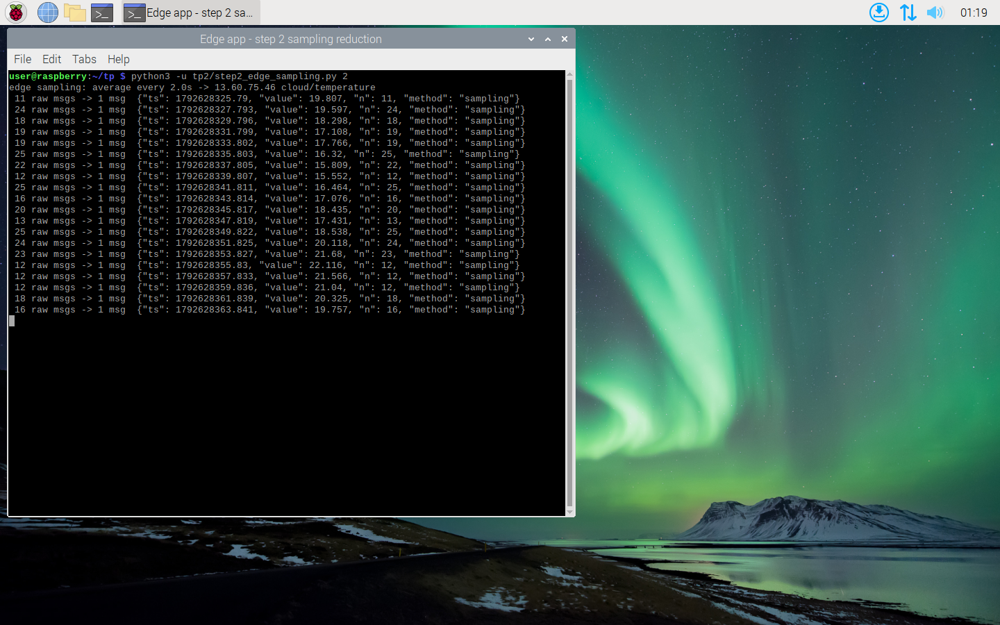
2.2 Débit reçu par le cloud. Le graphe I/O superpose le trafic brut (PC → Pi, bleu) et le trafic réduit (Pi → EC2, orange) pendant 63 s de publication poissonnienne à λ = 10.
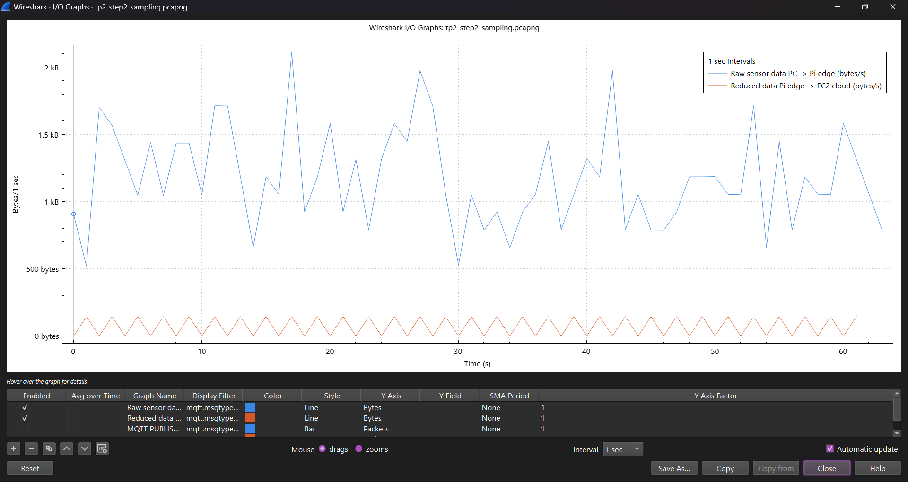
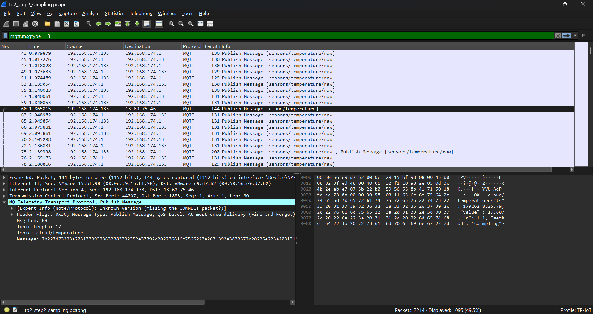
13.60.75.46:1883 au milieu du flux brut. Les PUBLISH Pi → PC visibles sont ceux relayés à l'outil de comparaison de l'étape 3.1, abonné au topic brut.Étape 3 · filtrage par moyenne glissante
3.1 Lecture côté cloud. step3_cloud_viewer.py s'abonne en même temps au topic brut (broker edge) et au topic réduit (broker EC2, compte viewer), puis trace les deux courbes. Avec la moyenne par période, la courbe cloud suit la tendance mais en retard et en escalier. Chaque point représente la fenêtre [t − 2 s, t] et il est daté de la fin de la période. Le nombre d'échantillons par fenêtre varie de 11 à 25, ce qui ajoute du bruit.
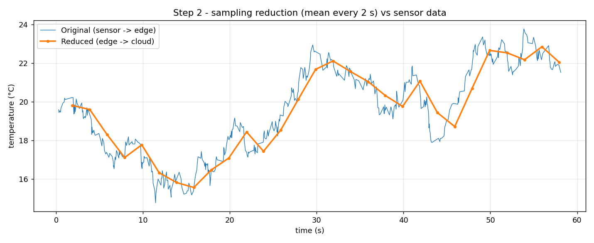
3.2 Moyenne glissante. Le calcul est remplacé par une fenêtre glissante des 30 derniers échantillons, qui chevauche les périodes successives. La valeur est datée du centre de la fenêtre (ts_center, moyenne des horodatages des échantillons). On obtient ainsi la moyenne centrée de l'énoncé, x̄ᵢ = 1/(2M+1) · Σj=−M..M x[i+j], livrée avec une latence d'une demi-fenêtre (environ 2,5 s ici).
window = collections.deque(maxlen=WINDOW) # 30 derniers échantillons (ts, valeur)
def on_message(client, userdata, msg):
m = json.loads(msg.payload)
with lock:
window.append((m.get("ts", time.time()), m["value"]))
while True:
time.sleep(PERIOD) # toujours 1 message / 2 s vers le cloud
with lock:
window_average = round(sum(v for _, v in window) / len(window), 3)
ts_center = round(sum(t for t, _ in window) / len(window), 3)
cloud.publish("cloud/temperature", json.dumps({"ts": time.time(), "value": window_average,
"ts_center": ts_center, "window": len(window)}))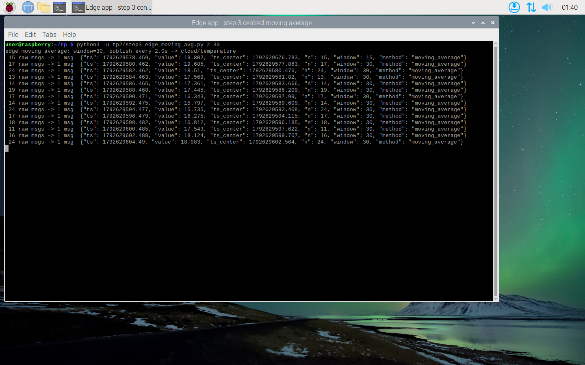
ts_center.3.3 Concordance des courbes. La courbe réduite suit maintenant la courbe du capteur, sans décalage, comme sur la figure « Melbourne » de l'énoncé. La même opération faite hors ligne sur tout le dataset (fenêtre centrée, M = 25) donne la figure 32.
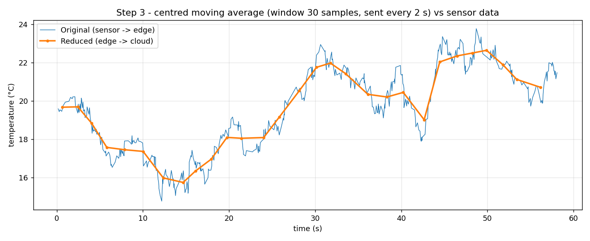
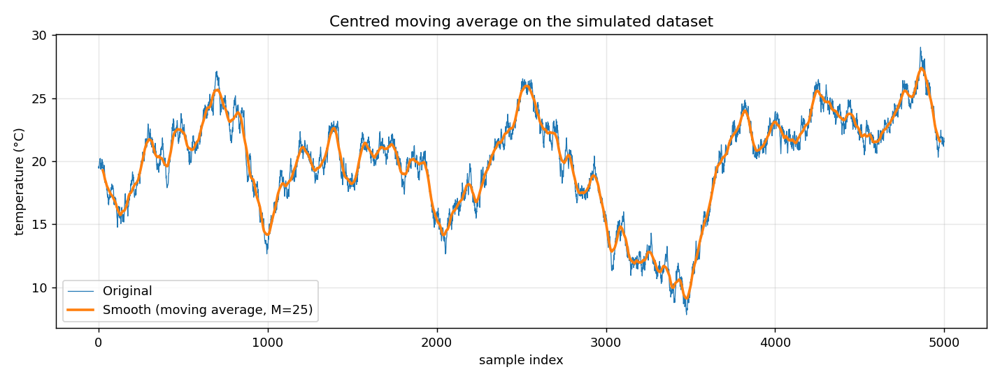
np.convolve, fenêtre 2M+1 = 51) sur les 5 000 valeurs : le lissage conserve la tendance et supprime le bruit de mesure.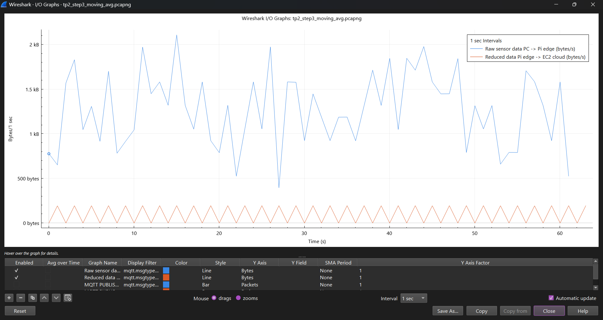
Bilan chiffré
Mesures relevées dans Wireshark (trames PUBLISH complètes, en-têtes Ethernet/IP/TCP compris) et précision calculée par tp2/step3_3_analysis.py. La référence est la moyenne des valeurs brutes sur ±1,5 s autour de l'instant de chaque point cloud. La gigue est l'écart-type des différences entre points cloud successifs.
| Méthode à l'edge | PUBLISH brut | Octets brut | PUBLISH cloud | Octets cloud | Gain octets | RMSE (°C) | Gigue (°C) |
|---|---|---|---|---|---|---|---|
| Échantillonnage, daté fin de période | 572 | 75 260 | 31 | 4 487 | 94,0 % | 0,62 | 1,06 |
| Échantillonnage, daté milieu de période | — | — | — | — | — | 0,22 | 1,06 |
| Moyenne glissante centrée (W = 30) | 600 | 78 951 | 32 | 6 228 | 92,1 % | 0,14 | 0,95 |
L'essentiel du défaut de la moyenne par période (0,62 °C) vient de sa datation en fin de fenêtre, soit 1 s de retard. Même recalée au milieu de sa période, elle reste moins précise (0,22 °C) que la moyenne glissante centrée (0,14 °C), car ses fenêtres ne se chevauchent pas et contiennent un nombre variable d'échantillons. La moyenne glissante coûte un peu de latence et quelques octets de plus par message, pour un débit montant identique.
Chaîne complète : simulateur, edge, dashboards
En plus des TP, la chaîne a été rendue permanente et observable de bout en bout, avec quatre capteurs (température et humidité DHT, pression, qualité d'air MQ135 en ppm de CO₂).
Passerelle edge sur le Raspberry Pi
edge/edge_gateway.py est un service systemd (edge-gateway.service) qui généralise les étapes 2 et 3 :
- abonnement à
sensors/+/rawet réduction par capteur, avec trois types de moyenne :sampling(moyenne des valeurs reçues pendant la période, datée de la fin de la période),moving(moyenne glissante centrée sur les window dernières valeurs, datée du centre de la fenêtre par le champts_center, comme à l'étape 3) oupassthrough(aucune réduction) ; - deux paramètres : la période fixe le rythme d'envoi vers le cloud (un message par capteur et par période, donc le débit sortant), la fenêtre fixe le nombre de valeurs moyennées en mode
moving(plus grande, la courbe est plus lisse mais réagit plus lentement) ; - publication de chaque valeur réduite (avec min, max et nombre d'échantillons fusionnés) en local (
edge/<capteur>/filtered, pour Node-RED) et vers l'EC2 (cloud/<capteur>) ; - débits entrant et sortant mesurés chaque seconde (taille réelle des paquets PUBLISH) et publiés sur
edge/statsetcloud/edge/stats; - détection de dépassement de seuil à l'edge (30 °C, 80 %, 600 ppm), envoyée immédiatement sur
cloud/alertssans attendre la période de réduction ; - santé du Pi (CPU, mémoire, charge, uptime) toutes les 5 s, et statut en ligne/hors ligne par last will MQTT retenu ;
- mode, période et fenêtre modifiables à chaud par un message JSON sur
edge/control.
Topics, messages et rôle de chaque broker
Toutes les charges utiles sont en JSON. MQTT ne transporte aucune date dans un PUBLISH, donc chaque message porte son horodatage ts (temps Unix en secondes, avec les millisecondes). Il sert à tracer les courbes au bon instant même si le réseau retarde ou met en file les messages, à dater une moyenne (ts_center), à ordonner les messages et, avec seq, à repérer les pertes.
| Broker | Adresse | Rôle |
|---|---|---|
| Edge (Raspberry Pi) | 192.168.174.133:1883, sans mot de passe (réseau local) | Point central de l'edge : reçoit les données brutes des capteurs ; la passerelle et Node-RED les lisent ; le simulateur y lit les résultats du Pi. |
| Cloud (EC2) | 13.60.75.46:1883, comptes edge / viewer + ACL | Ne reçoit que les données réduites ; lu par le dashboard Next.js et par le simulateur. |
| PC (Windows) | 192.168.174.1:1883 | Utilisé seulement pour les essais du TP1 (pub/sub Windows, Pi → PC « module principal »). |
| Topic | Broker | Émetteur → lecteurs | Contenu |
|---|---|---|---|
sensors/<capteur>/raw | Pi | simulateur → passerelle, Node-RED | {"seq": 204, "ts": 1792628205.884, "value": 18.446, "unit": "°C"} |
edge/<capteur>/filtered | Pi | passerelle → Node-RED, simulateur | {"ts", "value", "n", "unit", "method", "min", "max", "ts_center"} |
edge/stats (1 s) | Pi | passerelle → simulateur, Node-RED | {"in_msgs_s", "in_bytes_s", "out_msgs_s", "out_bytes_s", "total_…", "reduction_pct", "mode", "period", "window"} |
edge/system (5 s) | Pi | passerelle → Node-RED | {"cpu_pct", "mem_used_pct", "load1", "cpus", "uptime_s", "host"} |
edge/alerts | Pi | passerelle → Node-RED, simulateur | {"sensor", "value", "limit", "state": "ALARM" | "OK"} |
edge/control | Pi | simulateur, Node-RED → passerelle | {"mode": "sampling", "period": 2, "window": 30} |
edge/config (retenu) | Pi | passerelle → simulateur | configuration courante {"mode", "period", "window"} |
cloud/<capteur> | EC2 | passerelle → dashboard, simulateur | comme edge/<capteur>/filtered |
cloud/edge/stats, cloud/edge/system, cloud/alerts | EC2 | passerelle → dashboard | copies de edge/stats, edge/system, edge/alerts |
cloud/edge/status (retenu, last will) | EC2 | passerelle → dashboard | {"state": "online"}, ou {"state": "offline"} publié par le broker si le Pi se déconnecte |
Signification des champs réduits : value est la moyenne envoyée, n le nombre de valeurs brutes reçues pendant la période (par exemple « 18 raw msgs → 1 msg »), min/max les extrêmes de ces valeurs, method le type de moyenne. Avec 4 capteurs à 10 msg/s et une période de 1 s, le Pi reçoit environ 40 msg/s et n'en envoie que 4 au cloud.
Simulateur de capteurs PyQt6
simulator/iot_simulator.py (PyQt6 + pyqtgraph) génère les quatre capteurs avec le modèle bitperfect, en arrivées périodiques ou poissonniennes (λ réglable par capteur). Il publie vers le broker du Pi et écoute à la fois ce que le Pi produit et ce qui arrive réellement sur l'EC2.
L'onglet « Live sensors » reprend la présentation des figures du TP2 : pour chaque capteur, la courbe originale (capteur → edge, bleu fin) et la courbe réduite telle qu'elle arrive sur le cloud (edge → cloud, orange avec points), sur un axe en secondes depuis le démarrage. Le panneau « Edge filter on the Raspberry Pi » permet de choisir le type de moyenne (moyenne par période, moyenne glissante centrée ou pass-through), la période, la fenêtre et la durée affichée (plot span). « Apply to edge » publie le choix sur edge/control ; le titre des graphes et la courbe orange repartent avec le nouveau réglage.
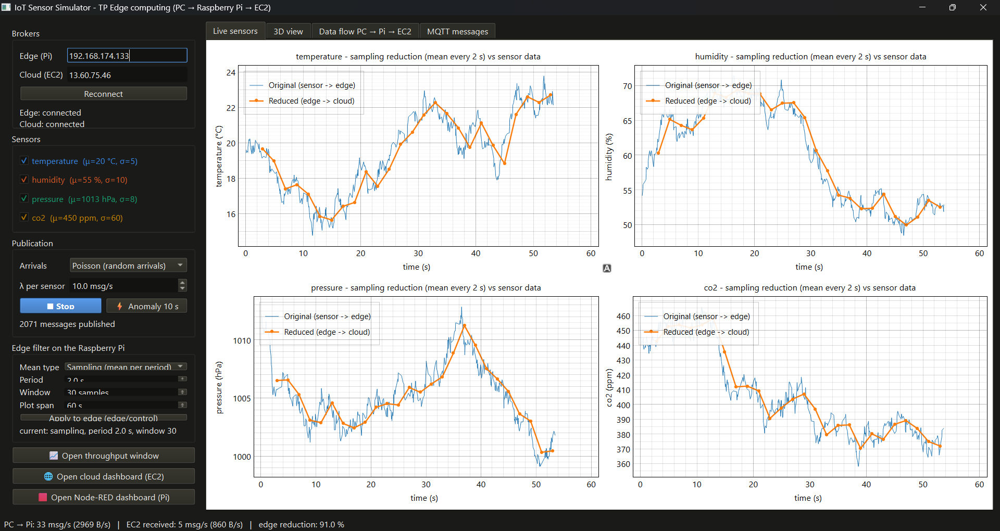
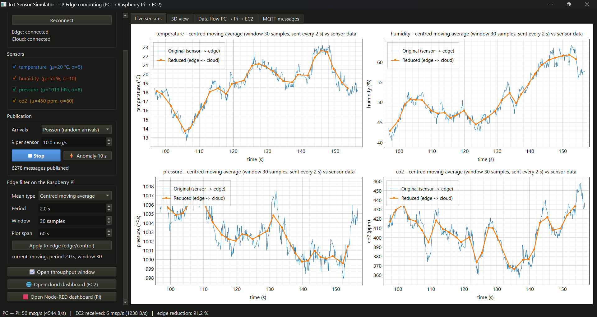
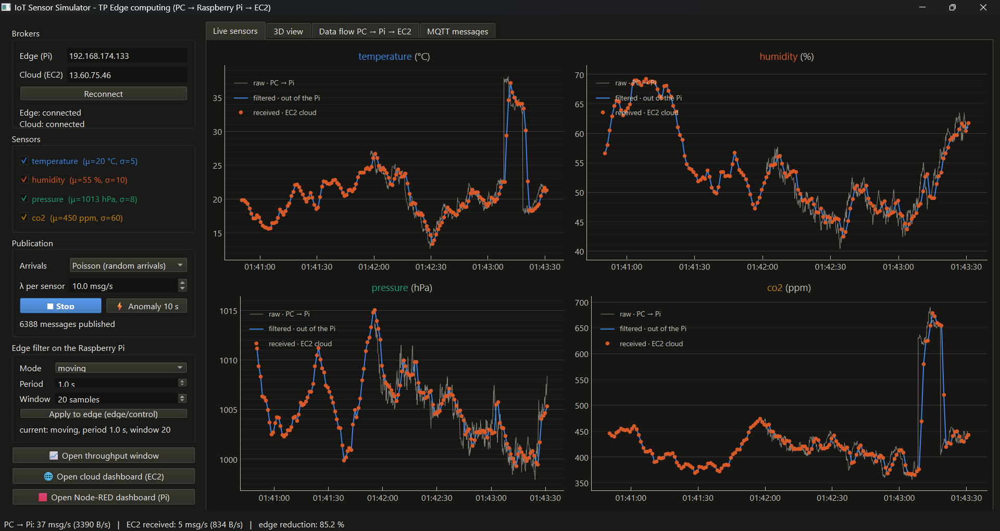
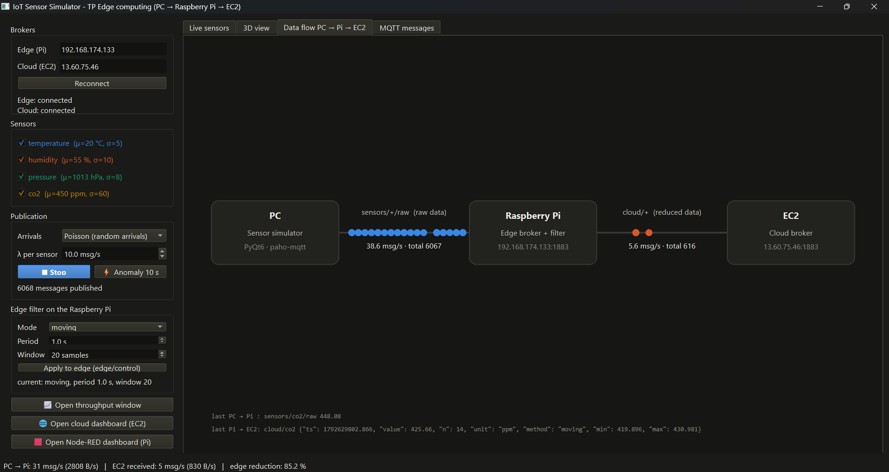
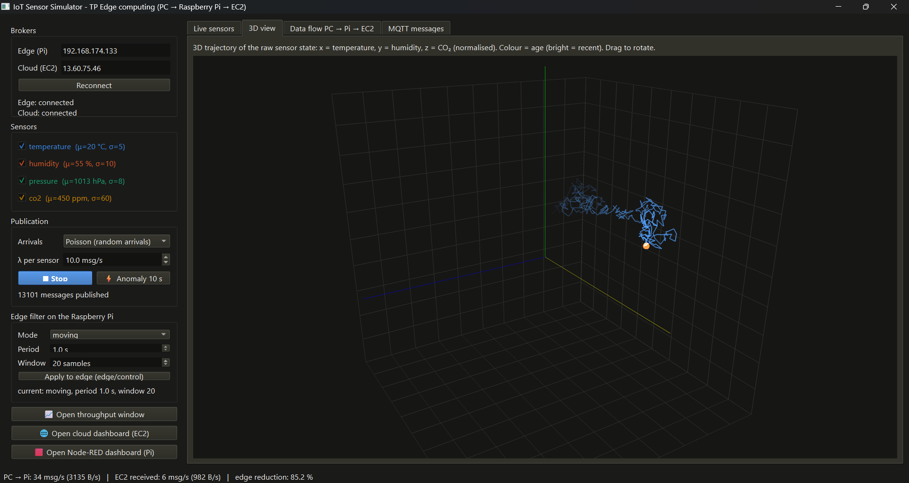
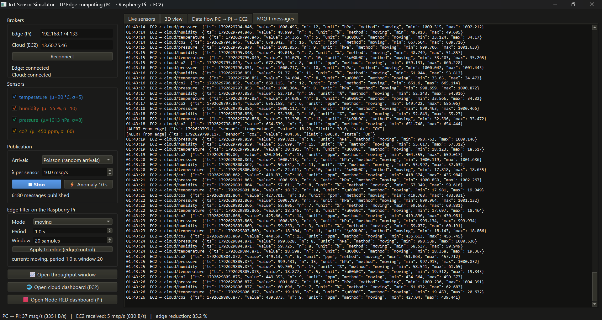
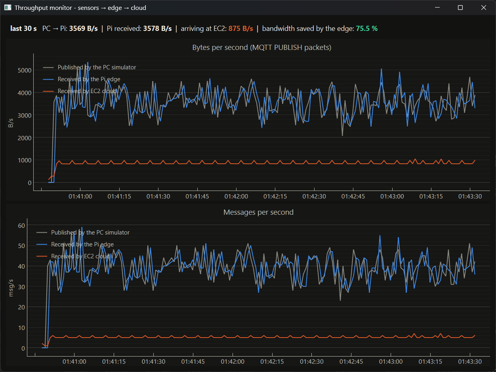
Comment le simulateur mesure le débit. Il n'écoute pas l'interface réseau : il travaille au niveau MQTT, à partir de trois sources.
- PC → Pi : il compte lui-même chaque message qu'il publie et la taille du paquet PUBLISH (en-tête fixe + topic + charge utile).
- Reçu par le Pi : il lit les compteurs que la passerelle publie chaque seconde sur
edge/stats, sur le broker du Pi. - Arrivé sur l'EC2 : il est abonné à
cloud/#sur le broker EC2 (compteviewer) et compte les messages reçus.
Un QTimer relève les compteurs chaque seconde et les range dans des tampons circulaires (collections.deque, 300 points). Les callbacks paho-mqtt tournent dans leur propre thread et déposent les événements dans une queue.Queue, vidée toutes les 50 ms par le thread graphique ; les courbes sont redessinées toutes les 250 ms. Bibliothèques : PyQt6 (interface), pyqtgraph et pyqtgraph.opengl / PyOpenGL (courbes 2D et 3D), paho-mqtt, numpy.
| Simulateur | Wireshark | |
|---|---|---|
| Source | messages MQTT (niveau application) | paquets réels sur VMnet8 (niveau réseau) |
| Taille comptée | paquet MQTT seul (≈ 90 o par mesure brute) | trame complète Ethernet + IP + TCP + MQTT (≈ 140 à 150 o) |
| Exemple, même trafic | ≈ 3,6 ko/s entrants | ≈ 5,8 ko/s entrants |
Les valeurs absolues diffèrent à cause des en-têtes réseau, environ 66 octets par paquet, mais le pourcentage de réduction reste du même ordre.
Mesure en direct dans Wireshark, une seule fenêtre
Pour suivre les deux sens en même temps, une seule capture sur VMnet8 suffit, avec le filtre de capture tcp dst port 1883 and (dst host 192.168.174.133 or dst host 13.60.75.46) et le profil Wireshark TP-IoT. Dans Statistics › I/O Graphs, deux graphes préréglés en octets par seconde se superposent :
- IN, données entrantes dans la Raspberry Pi :
mqtt.msgtype==3 && ip.dst==192.168.174.133(bleu) ; - OUT, données sortantes du Pi vers l'EC2 :
mqtt.msgtype==3 && ip.dst==13.60.75.46(orange).
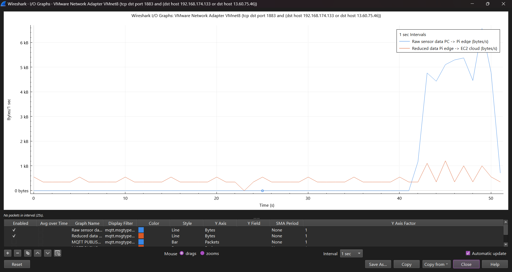
Dashboard Node-RED sur le Raspberry Pi
Node-RED 4 avec Dashboard 2.0, accessible sur http://192.168.174.133:1880/dashboard depuis le réseau local. Le flux est généré par edge/make_nodered_flow.py et déployé par l'API d'administration.
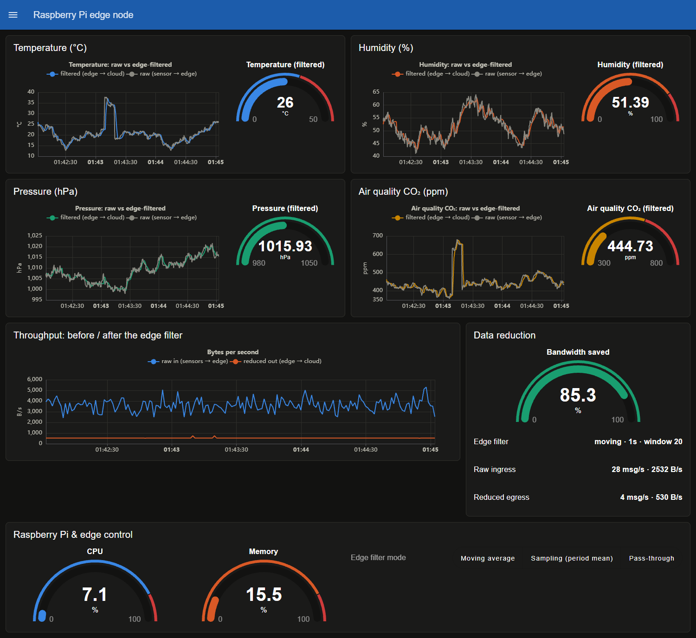
edge/control). Les alertes de l'edge s'affichent en notification.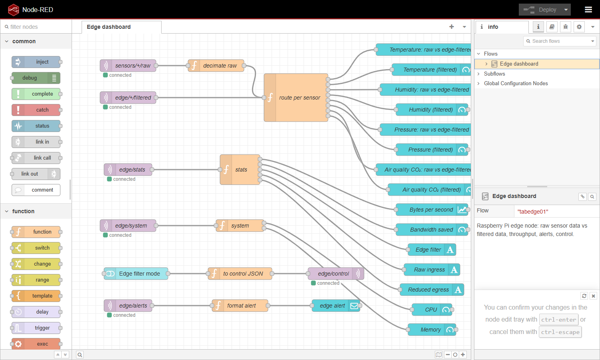
Dashboard cloud Next.js sur l'EC2
Application Next.js 15 servie par nginx sur le port 80 : http://13.60.75.46/. Côté serveur, un seul client MQTT (compte viewer, lecture seule) s'abonne à cloud/# et garde l'historique. Les navigateurs reçoivent les mises à jour en temps réel par Server-Sent Events. Les graphiques utilisent Apache ECharts, et echarts-gl pour la 3D.
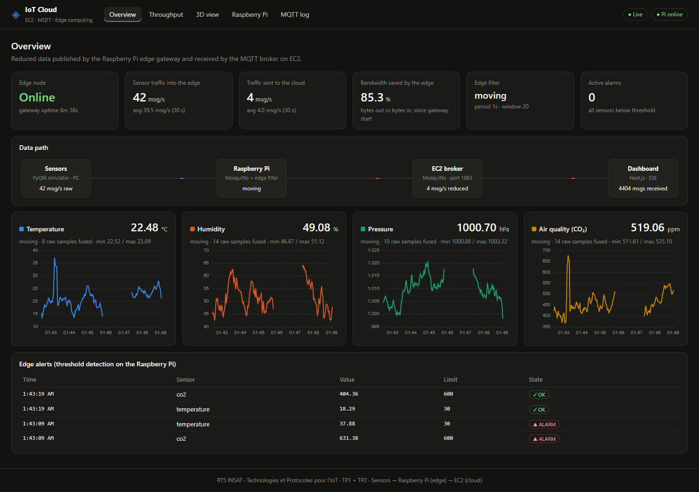
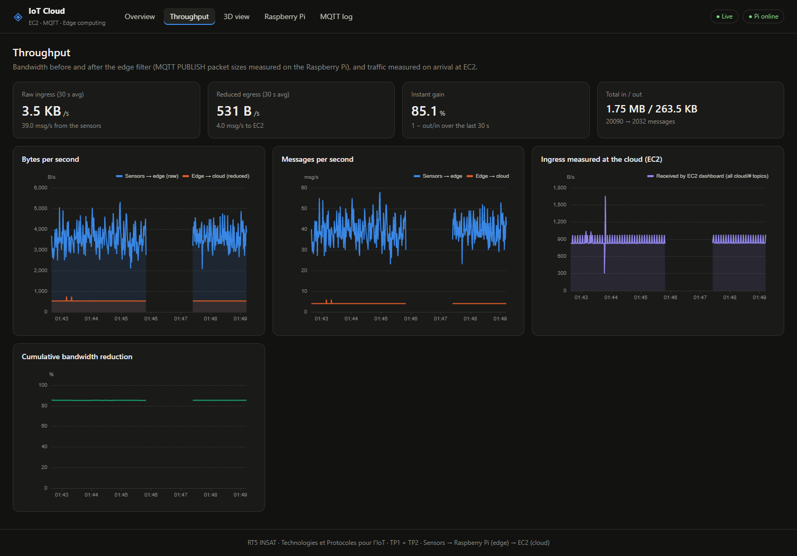
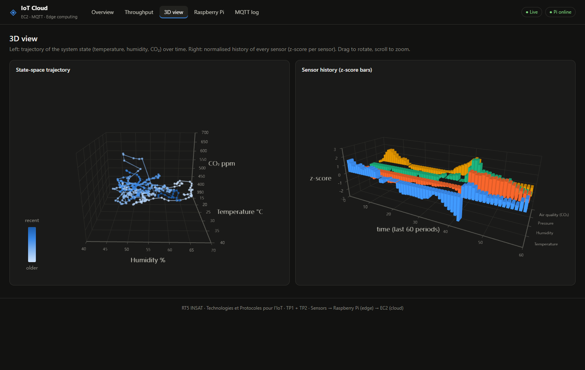
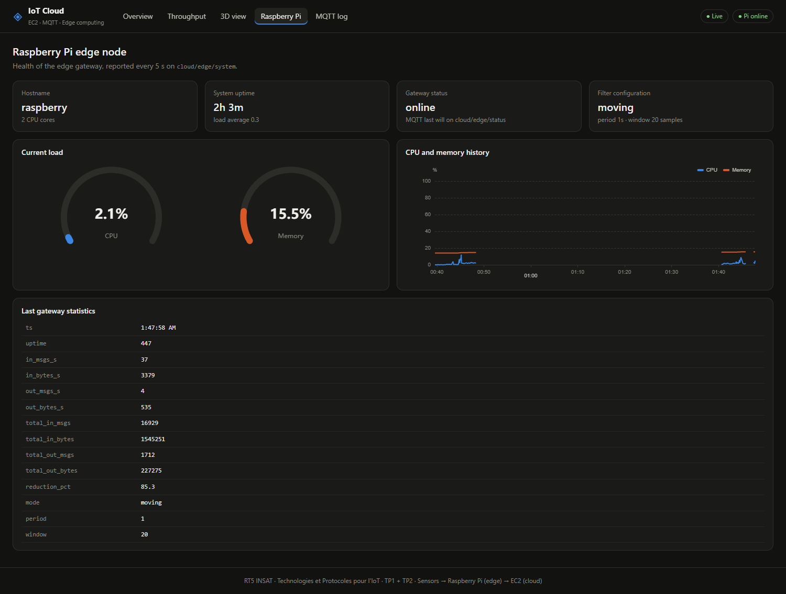
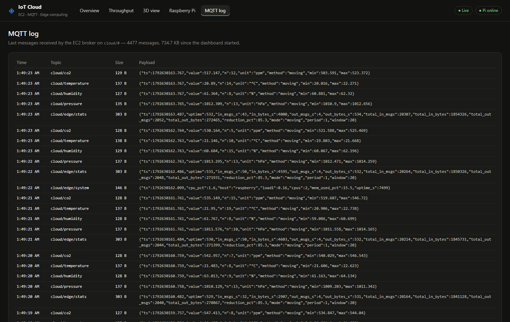
Difficultés rencontrées
- Dépôts Debian 11 i386. L'image Pi Desktop est en 32 bits et le dépôt
bullseye-securityrenvoie des 404 pour i386 depuis la fin du support. Les paquets ont été installés depuis le dépôt principal, avec une liste de sources temporaire passée à apt, sans modifier la configuration du Pi. - Node.js sur x86 32 bits. Debian ne fournit que Node 12 en i386, trop ancien pour Node-RED 4. La build Node 20
linux-x86du projet unofficial-builds de Node.js a été utilisée. - Mosquitto pour Windows. Le site mosquitto.org n'était joignable qu'en IPv6, absent du PC et de l'EC2. Le binaire natif 2.0.22 a été récupéré depuis les paquets MSYS2 avec ses DLL.
- Pare-feu Windows. Il a fallu autoriser
mosquitto.exesur le réseau privé pour que le Pi atteigne le broker du PC (§V.4). - Perte de connexion Pi → EC2. Après un blocage de la VM, le service Windows « VMware NAT Service » s'est arrêté : le Pi gardait son accès au réseau local mais plus à Internet (« No route to host » vers l'EC2), et son horloge a dérivé d'environ 130 s faute de NTP. En QoS 0, les messages envoyés pendant la coupure sont perdus, ce qui se voit comme des trous dans les courbes. Le service doit être redémarré avec des droits administrateur. Le simulateur place désormais les moyennes par période à leur heure de réception sur le PC, pour ne plus dépendre de l'horloge du Pi.
- Mesure du débit. Le filtre d'affichage
mqtt.msgtype==3a été préféré à un filtre par port, pour ne compter que les PUBLISH et exclure les ACK TCP et les PINGREQ.
Conclusion
Le TP1 a mis en place la communication MQTT sur les trois machines : broker local sous Windows, broker edge sur le Raspberry Pi et broker cloud sécurisé sur EC2. On a utilisé les clients en ligne de commande et Python, les jokers, les topics système, et analysé les paquets dans Wireshark. Le TP2 a montré l'intérêt du traitement à l'edge : fusionner une vingtaine de mesures en un seul message réduit le trafic vers le cloud de 92 à 94 %. La méthode de fusion compte : la moyenne glissante centrée suit la courbe du capteur nettement mieux qu'une simple moyenne par période, pour le même débit. Le simulateur, la passerelle permanente et les deux tableaux de bord rendent ce gain visible en temps réel, du capteur jusqu'au navigateur. Le simulateur permet en plus de choisir le type de moyenne appliqué par le Pi et de comparer immédiatement la courbe originale et la courbe reçue par le cloud, pendant que Wireshark montre les débits entrant et sortant dans une seule fenêtre.
Annexe · fichiers du projet
| Chemin | Contenu |
|---|---|
tp1/ | mqtt_publisher.py, mqtt_subscriber.py, single_publish.py, configuration du broker Windows, lanceurs .bat des démonstrations |
tp2/ | sensor_sim.py (port du simulateur), step1_1 à step3_3, cloud_env.py |
edge/ | edge_gateway.py, make_nodered_flow.py, node-red-flows.json |
simulator/ | iot_simulator.py (PyQt6) ; lancement : python iot_simulator.py puis « Start » ; type de moyenne, période et fenêtre dans le panneau « Edge filter », puis « Apply to edge » |
cloud/ | dashboard/ (Next.js), configuration Mosquitto et ACL, service systemd, site nginx |
report/captures/ | Captures Wireshark .pcapng de chaque étape (profil Wireshark TP-IoT avec les graphes I/O préréglés) |